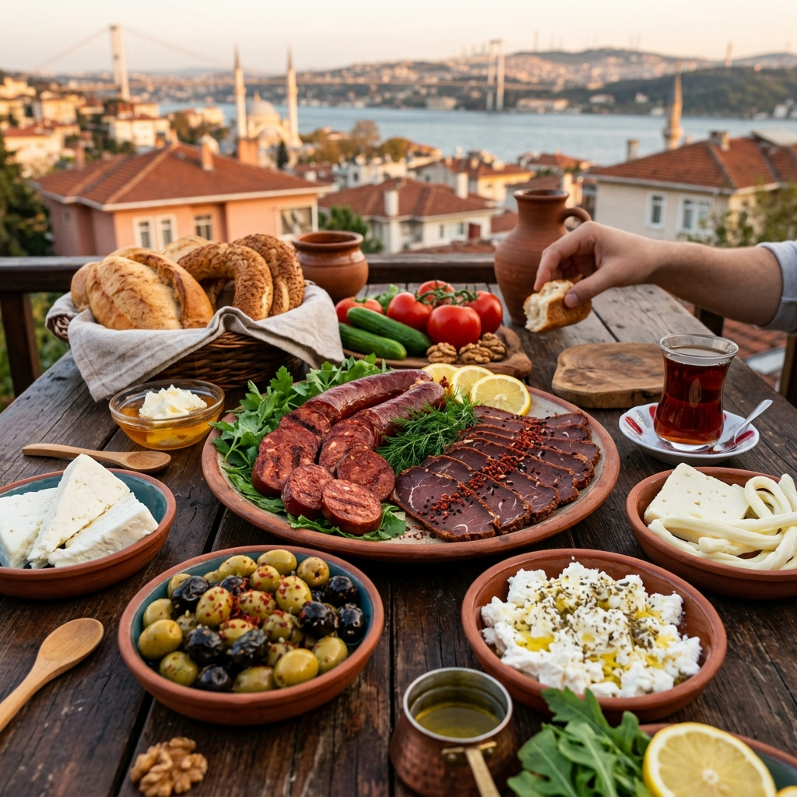

İsveç'e Yeni Taşınanlar İçin: En İyi Türk Gıda Ürünleri Nereden Alınır?

Kuzeyin soğuk ülkesi İsveç'e yerleştiğinizde ilk başlarda kahvaltı kültürünün çok farklı olduğunu fark edeceksiniz. İsveçliler genellikle yulaf lapası, tubda (tüpte satılan) havyar veya tatlımsı ekmeklerle güne başlarken, bizler için mükellef bir Türk kahvaltısı vazgeçilmezdir. Peki, İsveç'te Türk gıda ürünleri nereden temin edilir?
Olmazsa Olmaz Türk Lezzetleri
Gurbetteyken en çok özlenen lezzetlerin başında şunlar gelir:
- Ezine veya Tam Yağlı Beyaz Peynir: İsveç peynirleri (Herrgård, Präst) güzel olsa da, domates-salatalık ikilisinin yanına bir beyaz peynir şarttır.
- Siyah Zeytin: İsveç marketlerindeki zeytinler genellikle cam kavanozlarda asidik sıvılar içinde satılır. Hakiki sele zeytini bulmak zordur.
- Dökme Türk Çayı: Sallama çaylar memleket çayının demini ve keyfini asla veremez. Çaykur, Doğuş veya Tiryakilerin tercih ettiği diğer dökme çaylar ancak özel bakkallarda bulunur.
- Geleneksel Atıştırmalıklar: Pötibör bisküvi, eti puf, çekirdek ve tahin-pekmez ikilisi.
Memleket Hasretini Dindiren Adres: Yurdum Lezzetleri
Aradığınız tüm bu geleneksel lezzetleri bulmak için semt semt gezmenize gerek yok. İsveç'in neresinde olursanız olun, özlediğiniz tüm Türk market ürünlerini tek tıkla kapınıza getirtebilirsiniz.
🧀 Hemen Online Sipariş VerinAlışveriş İpuçları
Toplu alışveriş yapmak her zaman daha avantajlıdır. Özellikle zeytin, çay, salça gibi bozulmayan dayanıklı tüketim mallarını büyük boy (örneğin 1 kg'lık çay veya 2 kg'lık salça) almak hem kargo maliyetini optimize eder hem de uzun süre rahat etmenizi sağlar.
Bölgenizdeki mağazalar ve detaylı rehber için İsveç Türk Marketi sayfamızı ziyaret edin.